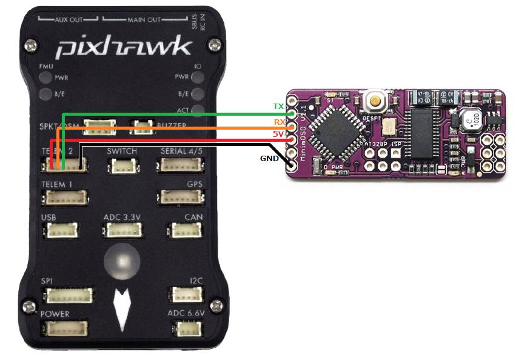
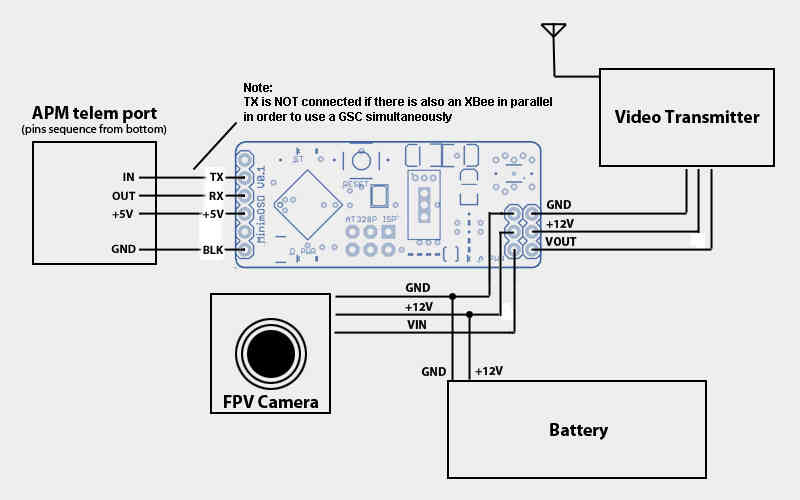
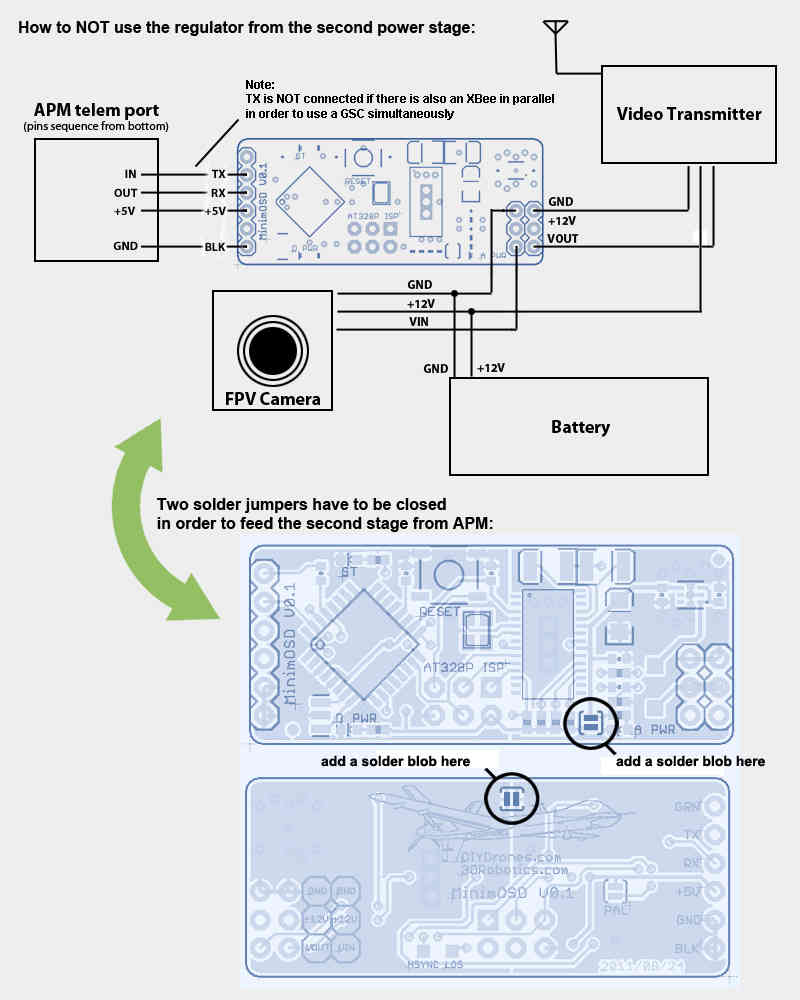
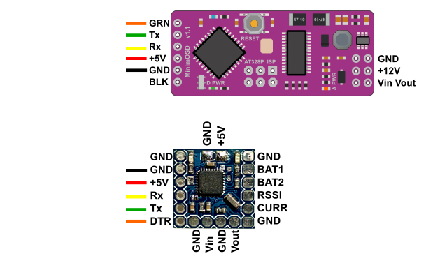

Minim OSD Quick Installation Guide¶
MinimOSD “On-Screen Display” is a small circuit board that pulls telemetry data from your autopilot and over-lays it on your First Person View monitor. The Minim OSD was designed and programmed by Sandro Benigno and Jani Hirvinen
This article provides brief instructions for how to connect the board. For more detailed instructions please refer to the MinimOSD Project wiki.
Overview¶
Connect the MinimOSD to the any of the autopilot’s serial ports as shown below. Note that the MinimOSD only “listens” so it is possible (but not recommended) to connect it in parallel with a telemetry radio (e.g. SiK Radio or similar).
{kind=link}
Set SERIALx_PROTOCOL = 1 (MAVLink1) because MinimOSD does not understand MAVLink2
Basic wiring Diagram¶
The original MinimOSD’s power setup provides two stages to avoid noises coming from servos attached to your ArduPilot boards. Those noises could introduce some glitches on video signal. The independent analog powering from a dedicated battery will heat the board considerably, but the video is the most clean as possible from MAX7456.
Maybe you don’t need to use the two stages. The way those noises would impact on the video signal will vary depending on a chain of aspects like servo’s brand, model, cables length, etc. So, try yourself and see if it’s important for your setup.
Here is the basic diagram which uses two stages approach of MinimOSD board:
{kind=link}
Optional setup for critical cooling conditions¶
(Hardware V0.1 and 1.0 only)
The second stage regulator from the MinimOSD boards earlier than V1.1 gets too hot on 12V video setups. If your frame does not have good air flow for cooling the OSD board you may want to feed the OSD entirely from the autopilot. Probably it will add some noises from servos, but you’ll be more safe this way:
{kind=link}
Firmware available for MinimOSD¶
There are several firmware options available for MinimOSD boards. Currently the two most active development streams are:
Minimosd-extra NG
MWOSD
Core functionality is broadly similar between the two firmwares.
MWOSD¶
MWOSD is a very popular OSD which has been around for many years initially supporting the muiltiwii based autopilots - iNav, betaflight, etc. Recent versions now provides full support for ArduPilot based FC.
MWOSD has an easy to use GUI configurator which has the added advantage of being able to flash firmware versions directly from within the GUI. Arduino or third party software is no longer required.
MWOSD continues to be actively developed and supported.
Modern GUI configurator with ability to flash hardware directly from within GUI
Drag / drop easy configurable screen layouts
Autoconfigures MAVLink for higher performance
OSD also fully supports many different FC types other than ArduPilot
MAX7456 renew doing in VSYNC to get rid of “snow” on screen but on interrupt instead of SPI polling
3 screens instead of 2
Individual control of sign icon visibility of each panel per screen
Voltage, current & RSSI can be measured on external pins (which can be found on some MinimOSD boards)
Alternative RADAR / MAP display modes
PAL/NTSC detected dynamically which allows using different cameras
Any RC channel can be translated to output pin (e.g. for cameras switch)
Font uploader included in the main firmware and much more usable
Font editor and several fonts already included with the GUI
Multiple pre-set layouts to choose from. All can be customised
Choose to display pilot icon or callsigns
The following links contain a quick start overview and an ardupilot specific installation guide
MinimOSD-extra NG¶
After some time with a stalled development of the firmware for the MinimOSD boards due to reaching the limit of the code size, a new developer (https://github.com/night-ghost) picked up the project and through some clever development effort managed to bring it back to life.
Some of the differences from the old traditional firmware are:
MAX7456 renew doing in VSYNC to get rid of “snow” on screen but on interrupt instead of SPI polling
4 screens instead of 2
Individual control of sign icon visibility of each panel per screen
voltage, current & RSSI can be measured on external pins (which can be found on some MinimOSD boards)
TLOG player in configurator - now settings can be checked without working plane/copter!
Small panels can be placed in unused areas of big panels
RADAR (like in MiniNAZAosd) and ILS in Horizon, can be enabled individually
Horizon angles can be adjusted via configurator, independently for PAL and NTSC
PAL/NTSC detected dynamically which allows using different cameras
Screen offsets via configurator
New format of GPS coordinates - in one line
Any RC channel can be translated to output pin (e.g. for cameras switch)
Font uploader included in the main firmware and much more usable
Plane & copter joined and even can be changed on the fly (e.g. for VTOL)
Configuration of some “hot” parameters from RC
Pre-compiled binaries and HEX files are in the Released folder with the CT GUI.
If you are willing to compile your version from the GitHub repo, the following mini guide is quite useful.
To compile on Windows:
Download the latest Arduino Version (currently 1.6.8)
Download the version of MinimOSD-Extra-DV you like, via git or zip (Github lets you click on a commit and view its files, so downloading that zip gives you the version you want)
If using git clone, also do a git submodule init and git submodule update. If downloading the zip from Github, you also need SingleSerial because Github does not include submodules into the download zip, so you will need to: https://github.com/night-ghost/SingleSerial
Copy all the libraries from MinimOSD to the Arduino libraries folder (+ SingleSerial if you downloaded the zip for it)
If not using UAVTalk or MultiWii disable them in Config.h:
//#define USE_UAVTALK 1 //#define USE_MWII 1
Sketch -> Export Compiled Binary (it will save the hex file in the MinimOSD folder of the source, one file with the bootloader and one without)
The developer also provides a convenient ready to use package that includes all the required files in their latest version here: OSD latest.
Alternative Hardware¶
Recently, new style of boards have appeared for sale on ebay and vendor sites:
MinimOSD w/ KV Team mod
Micro MinimOSD w/ KV Team mod
AEROMAX
The minimOSD w/ KV team mod is adds extra analogue/digital IO pins for direct voltage, current and RSSI measurement.
The Micro MinimOSD board is only 15mm x 15mm and is ideal for micro UAV projects.
The AEROMAX is slightly smaller than tradional minimOSD, has the additional KV mods,further I/O pins, a more efficient power consumption and a hardware IC that is far more resilient to power fluctuations providing a cleaner image.
{kind=link}